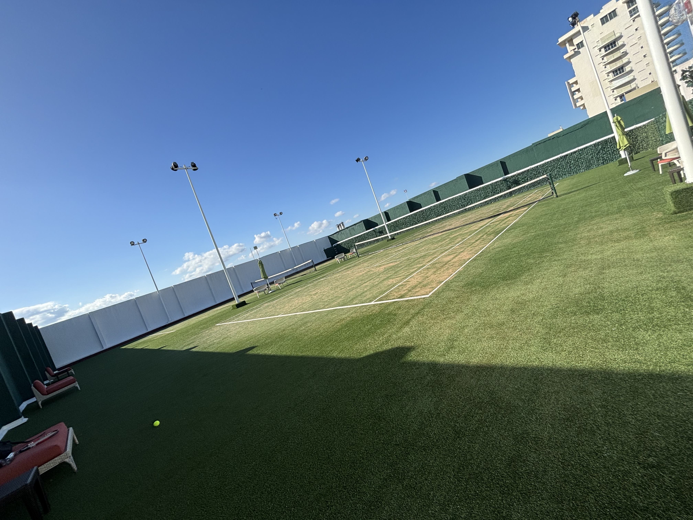

This page is all about tennis.
I started playing tennis over the summer of my 5th grade year with my coach, Gordon, where I train at the Warren Health and Racquet Club. I've been to tennis camps at the Chris Lewit Tennis Academy and the Garden State Tennis Center. My current rating is a 4.19 (with a 36% reliability), and my best win was against a 3.43 on May 11th, 2024, where I won 6-1 7-5. See moreof my tennis matches on my UTR profile